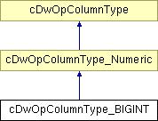

Hlavní stránka
Tøídy
Soubory
Ostatní stránky
Seznam tøíd
Hierarchie tøíd
Seznam èlenù tøíd
Dokumentace tøídy cDwOpColumnType_BIGINT
Diagram dìdiènosti pro tøídu cDwOpColumnType_BIGINT

Seznam všech èlenù.
Veøejné metody
cDwOpColumnType_BIGINT
($iFlags=0, $xDefault=null)
Dokumentace k metodám
cDwOpColumnType_BIGINT::cDwOpColumnType_BIGINT
(
$
iFlags
=
0
,
$
xDefault
=
null
)
Dokumentace pro tuto tøídu byla generována z následujícího souboru:
lib.cObjectPersistence_ColumnTypes.php
Generováno Mon Dec 11 11:13:37 2006 pro projekt web inc lib programem
1.5.0
 1.5.0
1.5.0